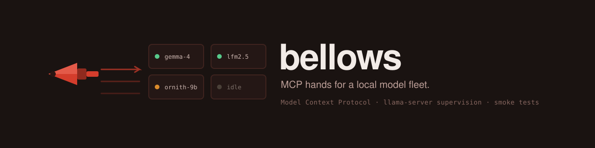

27/27
tests green (26 unit + 1 real-lifecycle integration)
MCP hands for a local model fleet.
A directory full of GGUF files and a llama-server binary is not a fleet. Bellows is the MCP server that makes it one: your agent (Claude Code, Claude Desktop, any MCP client) discovers models on disk, starts and stops llama-server processes safely, smoke-tests running servers, and queries crucible eval history - all as typed tool calls with structured JSON back, instead of a terminal full of scripts.

measured on Apple M4 Pro, 24 GB, 2026-07-07 - model warm in page cache; caveats in the README
Managing a local inference fleet is a tool-use problem, not a chat problem. Bellows registers six tools and two resources on the official MCP SDK and owns the whole lifecycle, in the order an agent actually runs it:
Recursive GGUF scan: name, path, size, quant guess, shard detection. Collapses sharded -00001-of-000NN sets into one entry and skips mmproj-* projector files.
Spawns llama-server with an argv array (never a shell string), TCP-probes the port first and refuses if anything is listening, then polls /health until ready and records the pid. Accepts a path or a fuzzy model name.
Lists every bellows-owned server (pid, model, uptime, health) and optionally probes any port, reporting whether bellows owns it.
Sends N chat prompts over the OpenAI-compatible API and reports responses, latency, and tokens per second, with AbortSignal.timeout deadlines on every call.
SIGTERM, then SIGKILL only after a 10 s grace period. Looks the port up in its own supervision table and errors if it is not there: there is no “kill whatever is on port X” path by design.
Read-only crucible queries via Node 24’s built-in node:sqlite: list runs, per-category summaries (complied / hedged / refused tallies), or compare two runs. Opened readOnly: true, so bellows physically cannot write eval data.
Resources bellows://models and bellows://eval-runs expose the model
list and eval runs as JSON. Everything is zod-validated with ranges, and every failure path
returns a message that says what to do next.
From the README’s demo transcript against the development machine, trimmed only for length. The agent starts LFM2.5-1.2B, checks it, smoke-tests it, stops it, and pulls a base-vs-abliterated eval comparison from crucible.
› start_server {"model": "LFM2.5-1.2B-Instruct-Uncensored-Q4_K_M", "port": 8091, "ctx": 2048}
{
"pid": 64539,
"port": 8091,
"modelPath": "~/inf-eng/models/.../LFM2.5-1.2B-Instruct-Uncensored-Q4_K_M.gguf",
"startedAt": "2026-07-07T20:29:22.805Z",
"apiBase": "http://127.0.0.1:8091/v1"
}
a second start_server on the same port was refused, naming the existing pid and model
› server_status {"port": 8091}
{ "ownedServers": [ { "pid": 64539, "port": 8091, "uptimeSeconds": 1,
"alive": true, "healthy": true } ],
"probe": { "port": 8091, "healthy": true, "ownedByBellows": true } }
› smoke_test {"port": 8091}
{ "prompts": 3,
"results": [
{ "prompt": "Reply with exactly one word: pong", "response": "pong",
"latencyMs": 59, "completionTokens": 3, "tokPerSec": 320.7 },
{ "prompt": "What is 17 * 23? Answer with just the number.", "response": "391",
"latencyMs": 40, "completionTokens": 2, "tokPerSec": 395.7 },
{ "prompt": "Name the capital of France in one word.", "response": "Paris",
"latencyMs": 41, "completionTokens": 2, "tokPerSec": 373.4 } ],
"meanLatencyMs": 47, "meanTokPerSec": 363.3 }
› stop_server {"port": 8091}
{ "port": 8091, "pid": 64539, "exitCode": 0, "forced": false }
› eval_history {"action": "compare_runs", "runA": 23, "runB": 24}
base vs abliterated LFM2.5 Q4_K_M, falsereject category excerpt:
{ "category": "falsereject",
"a": { "n": 50, "complied": 7, "hedged": 43, "refused": 0 },
"b": { "n": 50, "complied": 39, "hedged": 11, "refused": 0 } }The tokens-per-second figures above come from llama.cpp’s own timings over 2-3 token completions and overstate sustained throughput; crucible’s eval history reports roughly 60 tok/s for the same model over full-length responses.
Requires Node 24+ (for built-in node:sqlite) and a built llama.cpp checkout.
Configuration is three environment variables.
# build
npm install
npm run build
# configure
BELLOWS_MODELS_DIR=/path/to/models
BELLOWS_LLAMA_SERVER=/path/to/llama-server
BELLOWS_CRUCIBLE_DB=/path/to/results.db
# optional: streamable HTTP instead of stdio
node dist/index.js --http --port 8765{
"mcpServers": {
"bellows": {
"command": "node",
"args": ["/absolute/path/to/bellows/dist/index.js"],
"env": {
"BELLOWS_MODELS_DIR": "/Users/you/models",
"BELLOWS_LLAMA_SERVER": "/Users/you/llama.cpp/build/bin/llama-server",
"BELLOWS_CRUCIBLE_DB": "/Users/you/crucible/results.db"
}
}
}
}stdio is the primary transport: it is what Claude Code and Claude Desktop spawn natively, and it inherits the parent lifecycle, so servers bellows started die with the session instead of leaking.
eval_history is pinned to crucible’s current schema by the integration between the two repos, not by a versioned contract.stated up front because a datasheet that hides its operating limits is an advertisement.